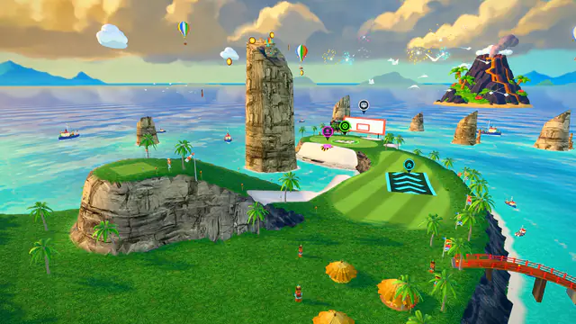

- safeTurtle BarRight, down to the sandbar: no water to carry. Pitch on along the bar.
- riskyThe LagoonStraight at the flag, all carry. Skull Rock is six metres left of the line.
- rocketOver Skull RockA Rocket lob clears the 60 metre rock: the hidden left of the green is all yours.
Lagoon Island
- Par 3
- 151 yd
- Wind 2–9 mph
Over the lagoon to an island green: round by the sandbar, or a Rocket over Skull Rock.